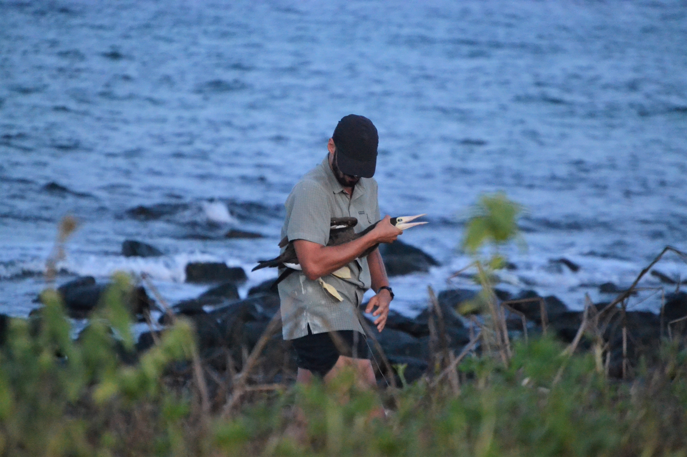

Bruno A. Linhares,MSc
Biólogo Marinho e Costeiro | Mestre em Oceanografia Biológica
BEM VINDO! | Este é o meu site pessoal e está em construção. Aqui, concentrarei informações relacionadas à minha atividade profissional como biólogo e pesquisador.

1 Sobre mim
Sou mestre e doutorando em Oceanografia Biológica pela Universidade Federal do Rio Grande (PPGOB/FURG) e bacharel em Ciências Biológicas com ênfase em Biologia Marinha e Costeira pela Universidade Federal do Rio Grande do Sul (UFRGS), em convênio com a Universidade Estadual do Rio Grande do Sul (UERGS). Trabalho com ecologia animal, com enfoque na biologia e conservação de aves marinhas e costeiras e seus habitats.
Atualmente, sou pesquisador vinculado ao Laboratório de Aves Aquáticas e Tartarugas Marinhas (LAATM-FURG), atuando no Programa de Monitoramento da Biodiversidade Aquática da Área Ambiental I (PMBA/FEST) como bolsista de doutorado do PPGOB/FURG. Na minha tese de doutorado, planejo investigar a influêncua aspectos espaciais, temporais, tróficos e biológicos nos níveis de contaminantes orgânicos e inorgânicos detectados no sangue e penas de aves amostradas no entorno da região do Rio Doce (Espírito Santo) e áreas marinhas adjacentes.
1.1 Trajetória acadêmica
Obs: informações sobre estágios, participação em eventos e atuação em campo podem ser encontradas no meu currículo Lattes
Durante a graduação, trabalhei com biologia reprodutiva, ecologia trófica e movimentos de uma ave limícola costeira, o piru-piru (Haematopus palliatus), em praias ao longo do litoral sul do Brasil. Nesse trabalho tive contato com o monitoramento intensivo da reprodução, inferindo o sucesso e fenologia reprodutiva, com mais de 60 campos realizados para este fim; com métodos tradicionais e marcadores químicos de análise de dieta, o primeiro caracterizado pela coleta e análise de vestígios alimentares entregados pelos pais aos filhotes, e o segundo com a análise de isótopos estáveis no sangue de adultos e filhotes; utilizando o anilhamento como uma ferramenta para monitorar deslocamentos, ao anilhar indivíduos com anilhas plásticas coloridas e monitorar a ocorrência desses indivíduos em outros locais, como o Refúgio de Vida Silvestre da Ilha dos Lobos. As informações levantadas nessas pesquisas foram importantes para o manejo e coservação local da região de Torres.
No mestrado tive oportunidade de trabalhar com uma temática completamente diferente. Utilizando a análise de isótopos estáveis, investiguei o transporte de nutrientes realizado por colônias de aves marinhas aos ambientes terrestres e aquáticos do arquipélago dos Abrolhos, Bahia, assim como a ecologia trófica dos ratos invasores (Rattus rattus) nesse arquipélago. Avaliamos o efeito das aves em diversos componentes do ambiente terrestre (solo, plantas, invertebrados, lagartos nativos e ratos), assim como em corais-estrelinha (Siderastrea stellata) no ambiente marinho adjacente às ilhas. Com esses trabalhos, mostramos que as aves influenciam isotopicamente todos os níveis tróficos no ambiente terrestre, assim como os corais no entorno de algumas ilhas (não todas, depende de outras variáveis); e que os ratos consomem matéria das aves marinhas de forma mais direta (predação ou consumo de carcaças) ou indireta, a depender de qual ilha e onde dentro da ilha o rato foi coletado. Essas informações foram relevantes para a conservação, por gerarem subsídios para o controle e erradicação dos ratos em Abrolhos (já realizada!!) e por mostrarem a importância ecológica das aves nesse sistema.
2 Currículo e páginas associadas
Laboratório de Aves Aquáticas e Tartarugas Marinhas
3 Galeria de fotos
Aqui depositarei fotos selecionadas de bichos ou expedições de campo específicas
4 Reprodutibilidade Científica com o R
Disciplina ministrada pelo professor Maurício Camargo no semestre 01/2023. As tarefas são itens avaliativos da disciplina, sendo este site também um produto da disciplina (Tarefa 1)
4.1 Tarefa 1
Consiste nos elementos gráficos deste website.
4.2 Tarefa 2
Apresentação usando o revealjs
4.3 Tarefa 3
Sobre o artigo escolhido, de Gliesch et al. (2023)
4.4 Tarefa 4
Arquivo PDF formatado para a revista XXX.
- PDF no formato para download